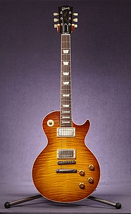

Les Paul
깁슨 레스폴(Gibson Les Paul)은 악기 생산 기업인 깁슨이 제작하는 솔리드 바디 전기 기타이다. 1952년 테드 멕카티와 레스 폴이 함께 디자인하여 판매했으며, 펜더의 스트라토캐스터, 텔레캐스터와 함께 가장 잘 알려진 전기 기타이기도 하다
깁슨 레스폴은 깁슨의 사장인 테드 멕카티와 재즈 기타리스트이자 기타 개발자였던 레스 폴의 합작이다. 1950년에 근본적인 솔리드 바디 기타라 할 수 있는 펜더의 텔레캐스터가 출시되면서 솔리드 바디 기타의 열풍이 불기 시작했고, 이 영향으로, 테드 맥카티는 레스 폴을 깁슨의 컨설턴트로 임명했다. 테드 맥카티의 의견을 더 많이 반영하어, 바디의 크기를 줄이고, 이전에 ES-175에 적용되어 큰 반향을 일으킨 하단부 싱글 컷어웨이를 적용하고, 마호가니 바디에 고전적인 곡선을 살린 아치형의 메이플탑을 올리고 솝바 싱글 픽업을 2개 장착한, 깁슨 레스폴의 기념비적인 첫 모델인 '52 골드탑' 모델을 제작했다. 이후 이를 바탕으로 한 '54 커스텀', '55 스페셜' 등의 모델이 발매되고 나서 1957년, 당시 깁슨에서 연구중이던 최첨단 기술인 험버커 픽업을 장착하여, 현대에 사람들이 레스폴이라 생각하는 '레스폴 스탠다드 (57 골드탑)'가 완성되었다. 초기의 깁슨 레스폴들은 골드탑 (금색 페인트로 칠함)모델이 많았는데, 메이플탑의 나무 무늬를 감추기 위함이었다고 한다.